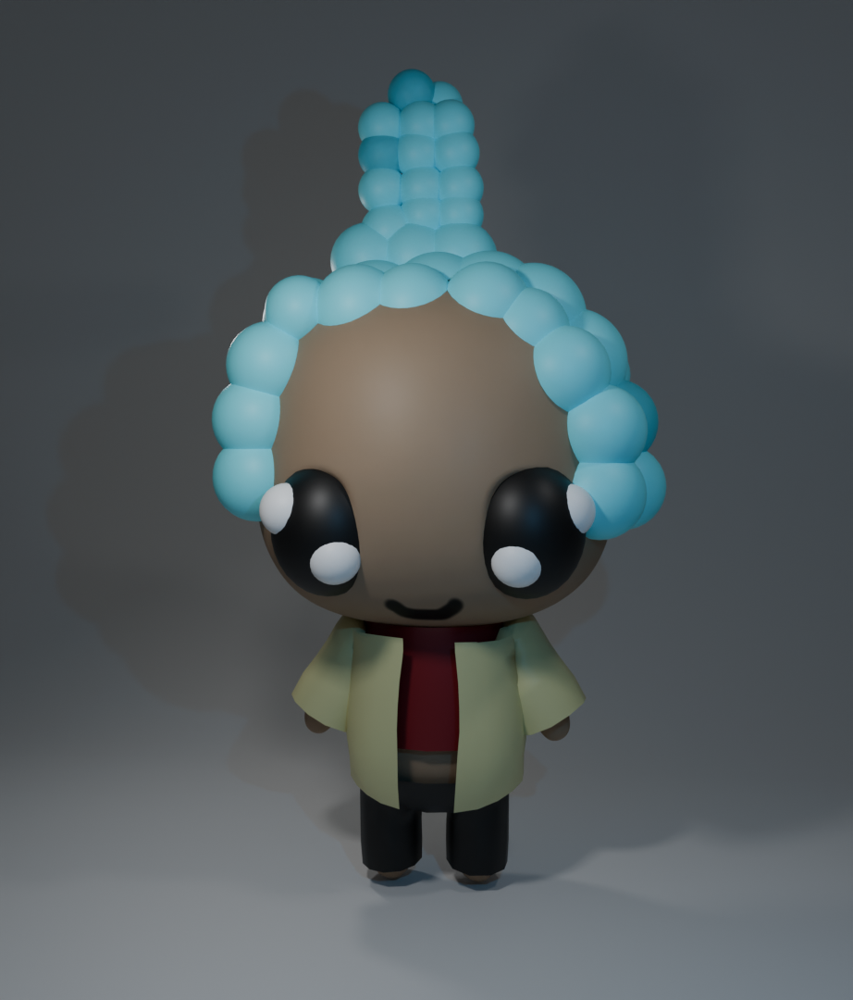
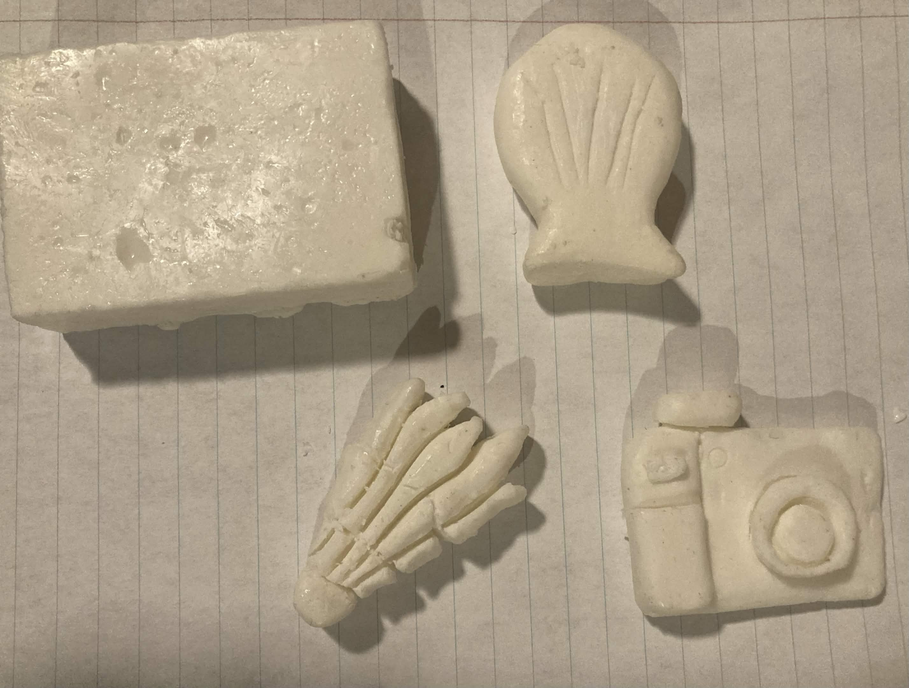

Here is where I have made these artwork in a 3D space. One of the peices is made using blender and the other peice is using unscented soap bar. Each if these seperate pieces has it's own challenges but in the end I enjoyed making the person or item in 3D space. My favorite 3D medium to use is Blender since I can make items in the 3D space and use my 2D character reference sheets to create the Character in 3D form.